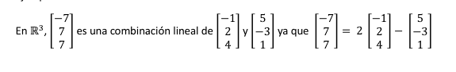
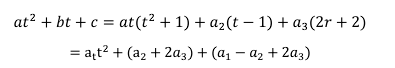

Un espacio vectorial V es un conjunto de objetos, denominados vectores, junto con dos
operaciones binarias llamadas suma y multiplicación por un escalar, y que satisfacen los diez
axiomas.
- 1. u+v∈V𝑢+𝑣∈𝑉
- 2. u+v=v+u𝑢+𝑣=𝑣+𝑢
- 3. (u+v)+w=u+(v+w)(𝑢+𝑣)+𝑤=𝑢+(𝑣+𝑤)
- 4. Existe un vector nulo 0V∈V0𝑉∈𝑉 tal que v+0V=v𝑣+0𝑉=𝑣
- 5. Para cada v𝑣 en V𝑉, existe un opuesto (–v)∈V(–𝑣)∈𝑉 tal que v+(–v)=0V𝑣+(–𝑣)=0𝑉
- 6. αv∈V𝛼𝑣∈𝑉
- 7. α(u+v)=αu+αv𝛼(𝑢+𝑣)=𝛼𝑢+𝛼𝑣
- 8. (α+β)v=αv+βv(𝛼+𝛽)𝑣=𝛼𝑣+𝛽𝑣
- 9. α(βv)=(αβ)v𝛼(𝛽𝑣)=(𝛼𝛽)𝑣
- 10. 1v=v1𝑣=𝑣
Se dice que H es un subespacio vectorial de V si H es un subconjunto no vacio de V, y H es un
espacio vectorial, junto con las operaciones de suma entre vectores y multiplicación por un escalar
definidas para V.
Se podría decir que el sub espacio H “hereda” las operaciones del espacio vectorial “padre” V
Un subconjunto no vacio H de un espacio vectorial V es un subespacio de V si se cumplen
las dos reglas de cerradura:
- Si 𝑥𝜖𝐻 𝑦 𝜖𝐻, entonces 𝑥 + 𝑦 𝜖𝐻.
- Si 𝑥𝜖𝐻, ENTONCES ∝ 𝑥𝜖𝐻 para todo escalar ∝.
Sean 𝑣1,𝑣2… Un vector es un espacio vectorial V. Entonces cualquier vector de la forma
𝑎1𝑣1 +𝑎2𝑣2 + … 𝑎𝑛𝑣𝑛 donde 𝑎1,𝑎2 , …,𝑎𝑛 son escalares se denomina una combinación lineal de 𝑣1 + 𝑣2,…,𝑣𝑛
Ejemplo

Se dice que los vectores 𝑣1, 𝑣2… 𝑣𝑘 de un espacio vectorial V generan a V, si cada vector en
V es una combinación lineal de 𝑣1,𝑣2….𝑣𝑘.
El procedimiento para establecer si los vectores generan el espacio vectorial V es como
sigue.
- Seleccione un vector arbitrario V en V.
- Determine si V es una combinación lineal de los vectores dados. Si lo es, los vectores dados
generan a v; si no los vectores dados no generan a V.
Si los vectores 𝑣1,𝑣2,…, 𝑣𝑘 forman una base para un espacio vectorial v, ellos son distintos y no
nulos; por esto los escribiremos como un conjunto [𝑣1,𝑣2….𝑣𝑘].
Debemos mostrar que 𝛿 genera a V y que es literalmente independiente. Para probar que genera
a V, sea el polinomio 𝑎𝑡2 + 𝑏𝑡 + 𝑐 un vector arbitrario en V. Determine contantes 𝑎1,𝑎2 𝑦 𝑎3,
tales que

Dado que los dos polinomios coinciden para todos los valores de r solo si los coeficientes de las
respectivas potencias respectivas de t son iguales obtenemos el sistema lineal.